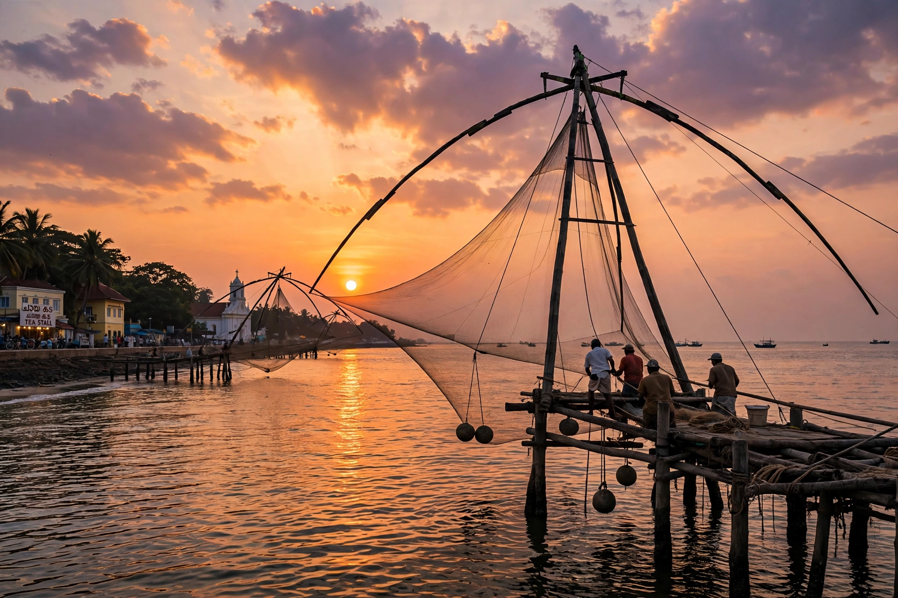

| Kochi | |
|---|---|
| Country | India |
| State | Kerala |
| District | Ernakulam |
| Area | 94.88 km² (city); ~440 km² metro |
| Population (2011) | 677,381 (city); ~2.1 million (metro) |
| Languages | Malayalam, English |
| Time zone | UTC+5:30 (IST) |
Kochi (Malayalam: കൊച്ചി, IPA: [kotːʃi]), formerly known as Cochin, is a major port city on the Malabar Coast of India, bordering the Laccadive Sea, a part of the Arabian Sea. It is part of the district of Ernakulam in the state of Kerala and is often referred to as Ernakulam. Kochi is the most densely populated city in Kerala and forms part of the Greater Cochin region, the largest urban agglomeration in the state.
Often called the "Queen of the Arabian Sea", Kochi was an important spice trading centre on the west coast of India from the 14th century onward, and maintained a trade network with Arab merchants from the pre-Islamic era. It was the seat of the Kingdom of Cochin. Occupied by the Portuguese in 1503, Kochi was the first of the European colonial settlements in India. It remained the main seat of Portuguese India until 1530, when Goa was chosen instead. The city was later occupied by the Dutch and then the British, under whose rule the princely state of Cochin became part of the Madras Presidency.
Kochi was a fishing village that grew into a trading post after the great flood of the Periyar River in 1341, which silted up the ancient port of Muziris and created a natural harbour at Kochi. The raja of Cochin granted the Portuguese permission to build a factory and fort — Fort Emmanuel was completed in 1503, the first European fort in India. The Dutch captured Kochi in 1663, followed by the British in 1795. Mysore under Hyder Ali and Tipu Sultan also held sway over the region in the 18th century.
The city spans a cluster of islands and peninsulas in a sheltered estuary where the Vembanad Lake meets the Arabian Sea. Landmarks include the Chinese fishing nets of Fort Kochi, Mattancherry Palace (the "Dutch Palace"), the Paradesi Synagogue (1568), and St. Francis Church, the oldest European church in India, where Vasco da Gama was first buried in 1524. Modern Kochi is Kerala's commercial capital, home to the Cochin Port, a major shipyard, the Kochi Refineries, the International Container Transshipment Terminal at Vallarpadam, and Infopark, a major IT hub. Willingdon Island is an artificial island created in the 1920s–30s. The Kochi Metro opened in 2017.